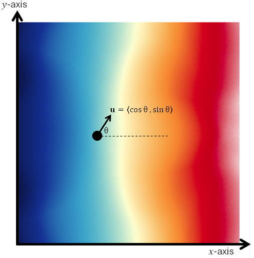
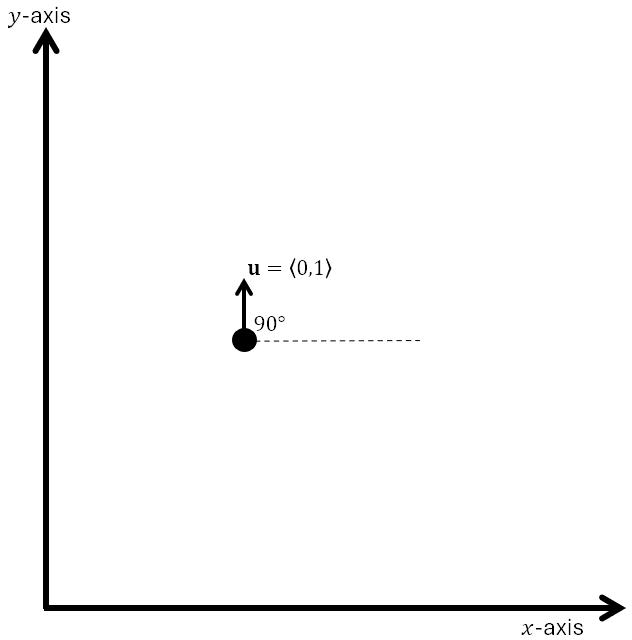
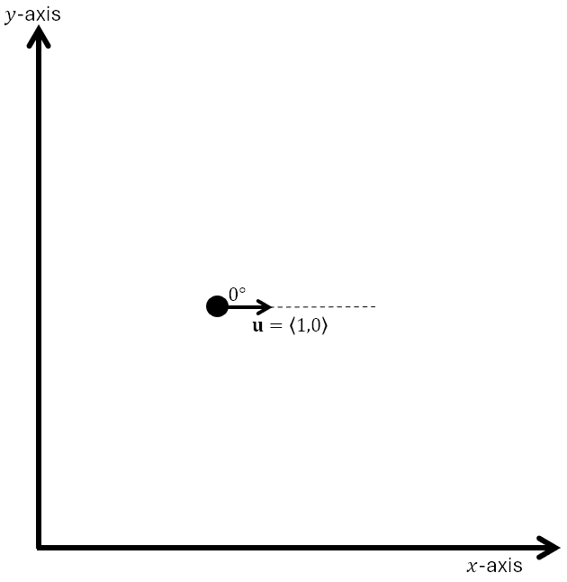

The Directional Derivative
The directional derivative tells us the instantaneous rate of change of a function in any direction!

As illustrated, suppose we face the direction of a unit vector \(\mathbf{u}\) that makes an angle \(\theta\) with the \(x\)-axis.
The directional derivative of a function \(f(x, y)\) is defined below. It gives the instantaneous rate of change of \(f\) in the direction \(\mathbf{u}\).
The Directional Derivative
The directional derivative is related to the gradient!
Directional Derivative Using the Gradient
The directional derivative is the dot product of the gradient with the unit vector indicating the direction.
An Example
As in the figure above, assume the function below gives the temperature of a metal plate at each point in the \(xy\)-plane. Find and interpret the directional derivative.
At each point \((x, y)\), if we turn and face a direction that makes an angle \(\theta\) with the \(x\)-axis, this expression gives the instantaneous rate of change in temperature in that direction.
A Sample Homework Problem
Consider the function below. Find the directional derivative \(D_{\mathbf{u}}f\) at the point \((2, 1)\) in the direction of the unit vector below.
A Sample Homework Problem
Consider the function below. Find the directional derivative \(D_{\mathbf{u}}f\) at the point \((2, 1)\) in the direction of the vector below.
The formula for the directional derivative requires a unit vector, \(\mathbf{u}\). So we first normalize \(\mathbf{a}\).
Let’s use \(\theta = 90^\circ\) in the formula for the directional derivative.

Very Important Conclusion: The partial derivative with respect to \(y\) is the directional derivative in the direction \(\theta = 90^\circ\), the direction of the unit vector \(\mathbf{u} = \langle 0, 1 \rangle\).
Now let’s use \(\theta = 0^\circ\).

Very Important Conclusion: The partial derivative with respect to \(x\) is the directional derivative in the direction \(\theta = 0^\circ\), the direction of the unit vector \(\mathbf{u} = \langle 1, 0 \rangle\).